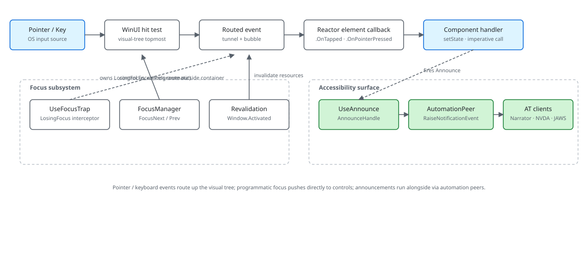

Microsoft.UI.Reactor (Reactor)'s focus and input surfaces are thin wrappers over WinUI's
routed-event system — every pointer event, every key press, every
gesture starts in WinUI's hit-test, walks the visual tree as a routed
event, and lands at a Reactor element modifier like
.OnTapped or .OnKeyDown.
Three subsystems sit alongside the event flow. UseFocusTrap rides
on LosingFocus to cancel focus changes that would leave the trap
container. FocusManager registers fields and drives
enter-to-advance on form input. UseAnnounce takes a
shortcut around focus entirely — it raises an automation-peer
notification, not a focus event, so the announcement reaches a screen
reader even when nothing visible changes. The most common mistake is
treating focus as a property you set: control.Focus(...) requests
focus, and the request loses to anything else competing on the same
dispatcher tick. Route programmatic focus through FocusManager so
the request runs at the right point in the lifecycle.
Focus and Input Internals¶
This page covers the input subsystem from the routed-event boundary through the Reactor hooks that observe it. User-facing API is on Input and Gestures and Accessibility; this is the internals view.
The event flow¶

WinUI owns the early stages: hit-testing under the pointer, the
tunneling preview events, the bubbling action events. By the time a
Reactor modifier sees an event, WinUI has already picked the target
and tunneled / bubbled the event through the visual tree. Reactor's
job at that boundary is two things — wire a RoutedEventHandler to
the materialized control during the reconciler's mount pass, and
attach the Reactor element's user callback to that handler. There's
no parallel event tree; the routes you see in
.OnPointerPressed are the WinUI routes,
plus a small layer that translates RoutedEventArgs into Reactor's
event-args records.
Reference¶
| Surface | Hook / type | Wired to | Primary use |
|---|---|---|---|
| Pointer event | .OnPointerPressed(...) |
WinUI PointerPressed routed event |
Low-level pointer (mouse / pen / touch) |
| Tap | .OnTapped(...) |
WinUI Tapped routed event |
Discrete click / tap with WinUI's gesture recognizer |
| Pan / pinch / rotate | .OnPan(...) |
WinUI Manipulation* events |
Continuous gestures with phase machine |
| Focus management | UseFocus() → FocusManager |
control.Focus(Programmatic) |
Form field ordering + enter-to-advance |
| Focus trap | UseFocusTrap(active) |
UIElement.LosingFocus |
Modal / flyout containment |
| Live region | UseAnnounce() |
FrameworkElementAutomationPeer.RaiseNotificationEvent |
Screen-reader announcements |
| Element focus | UseElementFocus() |
Control.Focus() via dispatcher |
Imperative focus on a single element |
| Element reference | UseElementRef<T>() + .Ref(...) |
ElementRef.SetCurrent / CurrentChanged |
Reactive cell for reference props and targeted imperative calls |
| XY focus references | .XYFocusUp/Down/Left/Right(ref) |
UIElement.XYFocus* |
Directional focus graph that survives mount order and recreation |
| Window-focus revalidation | FocusRevalidationService |
Window.Activated |
Refetch stale UseResource data |
The FocusManager¶
public void FocusNext(string? currentField = null)
{
if (_fieldOrder.Count == 0) return;
if (currentField is null)
{
FocusField(_fieldOrder[0]);
return;
}
var index = _fieldOrder.IndexOf(currentField);
if (index < 0) return;
if (index + 1 < _fieldOrder.Count)
{
FocusField(_fieldOrder[index + 1]);
}
else
{
_onSubmit?.Invoke();
}
}
FocusManager is the form-side companion to WinUI's
focus system. Components call useFocus.Register(name) on each input
during render, and the manager keeps a List<string> of field names
in order. FocusNext and FocusPrevious walk that list — the
common pattern is <TextBox>.OnEnter(() => fm.FocusNext(name)) so
pressing Enter on a field advances to the next one, and Enter on the
last field calls the registered submit handler. The _controls
dictionary maps each field name to the live WinUI Control; when
.Set("name") runs on mount, it stashes the control in
the manager. Programmatic focus calls
control.Focus(FocusState.Programmatic), which is the WinUI
mechanism for "I, the app, decided to move focus" rather than a
user-initiated tab.
ElementRef as a reactive cell¶
UseElementRef<T>() returns an ElementRef<T> whose inner cell is
owned by the reconciler. Applying .Ref(ref) to an element writes the
realized FrameworkElement with SetCurrent on mount and writes
null on unmount. SetCurrent first checks ReferenceEquals, so the
normal stable-rerender path is a hot no-op; real changes raise
CurrentChanged.
Reference properties subscribe to that event instead of sampling
.Current from a handler. That is what lets a TeachingTip.Target,
AutomationProperties.LabeledBy, or XYFocusRight resolve even when
the target mounts after the referrer, and clear when the target
unmounts. The cell dispatch has a same-cell re-entrancy guard plus a
small thread-static depth cap: a subscriber that writes back into the
same reference edge is treated as a reference-edge no-echo violation
and does not recurse to stack overflow.
Directional focus uses the same machinery. The .XYFocusUp(ref),
.XYFocusDown(ref), .XYFocusLeft(ref), and .XYFocusRight(ref)
modifiers store reference slots on the referrer and write WinUI's
UIElement.XYFocus* properties after cells resolve. Cycles are allowed:
each slot is just a one-way edge, and the dirty-set flush applies the
final graph after the commit.
Caveat:
Registeris called in render order, on every render. That means adding a field at index 1 (between two existing fields) requires a clean re-register cycle — the manager'sContainscheck makes re-registration idempotent for existing names, but it can't reorder. For dynamic forms that reorder fields, callClear()at the top of the render and re-register; for forms with conditional fields, prefer rendering all fields and toggling.IsVisibleover removing them from the tree, because removal also un-registers focus.
The focus trap¶
private void OnLosingFocus(UIElement sender, LosingFocusEventArgs args)
{
if (!_isActive || _container is null) return;
// SECURITY (TASK-100): refuse to trap when the container has fallen
// out of the visual state where trapping is sensible. Without these
// gates, a hidden / collapsed / unloaded container wedges keyboard
// navigation: the user can't focus anything else and Esc / Tab
// bounce back uselessly.
if (_container is FrameworkElement fe)
{
if (!fe.IsLoaded) return;
if (fe.Visibility != Visibility.Visible) return;
}
if (!_container.IsHitTestVisible) return;
UseFocusTrap lives on the LosingFocus routed event. When the
trap is active, the handler runs before WinUI commits the focus
change, walks from the proposed new-focus element back up the visual
tree, and cancels the change if the target isn't a descendant of the
trap container. That's the trap. The four gates at the top of the
snippet are what make it safe — without them, a trap attached to a
container that has since become hidden, unloaded, or collapsed
wedges the user's keyboard: every Tab keystroke loses focus, the
trap cancels every loss, and focus has no valid target inside the
trap either. Each guard names a specific failure mode the trap has
caused in the past.
Cross-window navigation gets special treatment. A LosingFocus event
whose NewFocusedElement has a different XamlRoot is a different
window entirely; the trap deliberately doesn't try to drag the user
back. That matters for dialogs that open a child window — the trap
on the parent must not block focus moving into the child.
Live-region announcements¶
public void Announce(string message, bool assertive)
{
// _dispatcherQueue is the readiness signal: it is assigned together with
// _textBlock in SetTextBlock on the UI thread. Gating on it (rather than
// _textBlock) means an off-thread caller can never observe a wired text
// block with no dispatcher and fall through to AnnounceCore off-thread.
if (_dispatcherQueue is not { } dq) return;
// WinUI XAML APIs throw RPC_E_WRONG_THREAD (0x8001010E) off the UI thread.
// Marshal back to the captured DispatcherQueue when called cross-thread; the
// UI-thread fast path is a single HasThreadAccess bool check.
if (!dq.HasThreadAccess)
{
dq.TryEnqueue(() => AnnounceCore(message, assertive));
return;
}
AnnounceCore(message, assertive);
}
private void AnnounceCore(string message, bool assertive)
{
if (_textBlock is null) return;
// Primary path: RaiseNotificationEvent (WinUI 1.4+, best Narrator/NVDA support).
var peer = FrameworkElementAutomationPeer.FromElement(_textBlock);
if (peer is not null)
{
peer.RaiseNotificationEvent(
AutomationNotificationKind.ActionCompleted,
assertive
? AutomationNotificationProcessing.ImportantAll
: AutomationNotificationProcessing.ImportantMostRecent,
message,
"ReactorAnnounce");
return;
}
// Fallback: update the live-region TextBlock text. Screen readers that
// monitor LiveSetting changes will pick this up.
_textBlock.Text = message;
}
UseAnnounce goes around the focus path entirely.
The primary mechanism is RaiseNotificationEvent (WinUI 1.4+) on a
hidden TextBlock that the handle keeps materialized. Screen readers
hooked into UI Automation receive the notification with a processing
hint — ImportantAll for assertive announcements that interrupt
current speech, ImportantMostRecent for polite announcements that
queue. The fallback path updates TextBlock.Text directly; screen
readers monitoring LiveSetting changes pick that up as a live-region
update.
The Region element the handle exposes is invisible, zero-sized, and
mounts to a real TextBlock. Components include it once in their
tree and call handle.Announce(...) from event handlers. The pattern
mirrors WAI-ARIA's aria-live region: a stable element that exists
solely so assistive tech has a stable target for live updates.
Continuous gesture phases¶
public enum GesturePhase
{
/// <summary>Gesture has just become recognized and its parameters are stable.</summary>
Began,
/// <summary>Gesture is in progress; deltas are being reported.</summary>
Changed,
/// <summary>Gesture completed normally.</summary>
Ended,
/// <summary>Gesture was cancelled (pointer capture lost, window focus lost, …).</summary>
Cancelled,
}
Pan, pinch, rotate, and long-press are continuous gestures — they
fire once at Began, zero or more times at Changed as the user's
finger moves, and exactly once at either Ended (normal release) or
Cancelled (pointer capture lost, escape, window deactivation). The
contract matters because component code routinely allocates state on
Began (record the start position, snapshot the model under the
pointer) and tears it down on the terminal phase. A handler that
skips Cancelled leaks the snapshot the next time the user is
mid-gesture and switches windows.
The four phases map directly onto WinUI's ManipulationStarted /
ManipulationDelta / ManipulationCompleted cycle, with the
addition of an explicit Cancelled phase that WinUI emits as a
completed manipulation with IsInertial = false and a pointer
capture loss. The gesture wrappers
.OnPan / .OnPinch / .OnRotate are the
shim that converts that pair of WinUI events into a clean Reactor
callback signature.
Focus revalidation¶
public IReadOnlyList<string> RevalidateNow()
{
var now = UtcNow();
lock (_lock)
{
if (now - _lastSweepUtc < ThrottleWindow)
return Array.Empty<string>();
_lastSweepUtc = now;
}
FocusRevalidationService is a different
sense of "focus" — it's the window-focus event, not the keyboard one.
When the user Alt-Tabs back to a Reactor app, any
UseResource hook that opted in via
ResourceOptions.RefetchOnWindowFocus = true gets its cache entry
invalidated, which fires a re-fetch on next render. The 30-second
throttle is what keeps a quick Alt-Tab in and out from triggering a
storm of refetches across every enrolled resource — without it, an
app open in five windows during a normal alt-tab cycle would refetch
every resource in every window each time the user crossed any of
them.
Patterns¶
Trapping focus in a modal¶
ContentDialog is already modal: WinUI side-mounts its content into a
XamlRoot popup and manages focus containment itself. Do not add
UseFocusTrap to it. The trap cancels any focus move whose target is
not a visual descendant of its container, and the dialog's content is
not in that subtree — so the trap fights the dialog instead of helping
it. That containment is asserted by the
FocusTrapContentDialog_ContainmentProbe selftest.
What a dialog does need is the announcement, so the screen reader is told it opened:
public override Element Render()
{
var (open, setOpen) = UseState(false);
var announce = UseAnnounce();
return VStack(
announce.Region,
Button("Delete…", () => setOpen(true)),
ContentDialog(
"Confirm delete",
TextBlock("Are you sure?"),
primaryButtonText: "Delete")
with
{
IsOpen = open,
CloseButtonText = "Cancel",
OnOpened = () => announce.Announce("Confirm delete dialog opened", assertive: true),
OnClosed = result =>
{
if (result == ContentDialogResult.Primary) Delete();
setOpen(false);
},
}
);
}
Note that the dialog is controlled: IsOpen is a field on the element
record, not an imperative ShowAsync call, which is what
REACTOR_DIALOG_001 enforces. The
reconciliation page describes the mount /
unmount machinery behind the element lifecycle.
UseFocusTrap is for modals you build in-tree — an overlay Grid
or Border layered over the page rather than hosted in a popup:
var (open, setOpen) = UseState(false);
var trap = this.UseFocusTrap(isActive: open);
return VStack(
Button("Edit…", () => setOpen(true)),
open
? Border(VStack(
TextBlock("Inline editor"),
Button("Close", () => setOpen(false))))
.Background(Theme.CardBackground)
.FocusTrap(trap)
: Empty()
);
The UseFocusTrap(open) call evaluates the active flag on every
render — flip open to false and the trap deactivates on the next
reconcile pass; flip it back to true and the trap reattaches.
Common Mistakes¶
Calling control.Focus() directly from an event handler¶
// Don't:
Button("Edit", () => {
setEditing(true);
inputControl.Focus(FocusState.Programmatic); // dispatcher race
});
public void FocusNext(string? currentField = null)
{
if (_fieldOrder.Count == 0) return;
if (currentField is null)
{
FocusField(_fieldOrder[0]);
return;
}
var index = _fieldOrder.IndexOf(currentField);
if (index < 0) return;
if (index + 1 < _fieldOrder.Count)
{
FocusField(_fieldOrder[index + 1]);
}
else
{
_onSubmit?.Invoke();
}
}
The setState call queues a re-render; the focus call runs
immediately. On the next dispatcher tick the reconciler may
re-create the input control (if the conditional rendering paths
differ enough), at which point the old reference is unmounted and
the new control hasn't been focused. Route programmatic focus
through UseFocus() (which captures the control during the
reconciler's set pass) or UseElementFocus() (which
schedules the focus call on the dispatcher after the render
commits) and the race goes away.
Tips¶
Set the trap's active flag, never call Attach / Detach.
The handle's IsActive setter is the only public mutation point. It
runs the attach / detach internally and idempotently — calling it
with the same value is a no-op, calling it true / false on
consecutive renders correctly cycles the LosingFocus subscription.
UseElementFocus is the dispatcher-safe focus call. When the
target is one specific element rather than one of several form
fields, prefer UseElementFocus() over storing a control reference.
The returned RequestFocus action schedules its call through the
dispatcher trampoline so it runs after the current render commits.
Continuous gestures must handle Cancelled. Every snapshot
allocated in Began must be released in either Ended or
Cancelled. Match on gesture.Phase with all four arms — the
compiler won't warn on a missing case, and the leak only shows up
when a user backgrounds the app mid-drag.
Next Steps¶
- Input and Gestures — Surface-level event API.
- Accessibility — User-facing accessibility hooks and conventions.
- Forms — How
UseFocusplugs into the form authoring story. - Reconciliation — Mount / update lifecycle behind the element records used here.
- Animation Pipeline — Previous under-the-hood page.